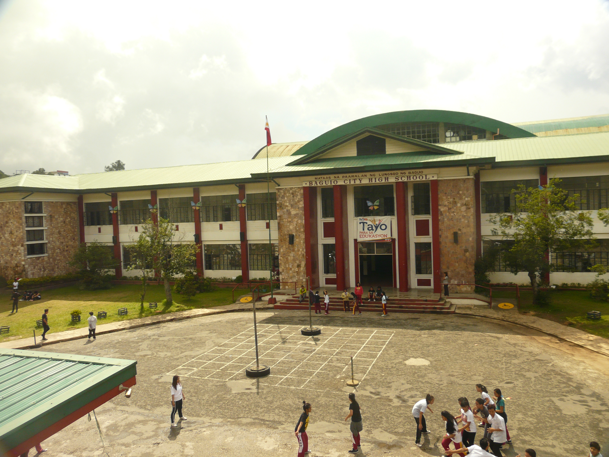

The first secondary school in Baguio was the normal school in 1916 later called Baguio Trade School. Classes were held where Home Sweet Home now stands as this area and the present University of the Philippines Baguio location was included in the reserved land for the Bureau of Education by Forbes. In 1919 it became Mountain Province High School. Classes were held at Teacher’s Camp and native girls from all over the province were housed at Bua Dormitory known today as Pacdal Elementary School. Among the pioneer teachers were Juan Balagot, Servillano Tumaneng, Pedro Balagot, Genoveva Llamas, Esperanza Ver, Donato Guerzon, Julia Guerzon, Grace H. Miller, Petra Ramirez, and Pilar Tan and Jess L. Gains who was also the principal.
MPHS easily gained national popularity in both academics and athletics because for a number of years, it had the strongest baseball team in Northern Luzon. Its coach, Arthur McCann produced baseball champs such as pitcher Antonio Capulo who one time pitched a non score game to Northern Luzon Teams and Juan Cerantes who was rated best 2nd baseman in the country. Antonio Dimas, Eugene Pucay, Gilbert Sonduan, Dibson Diwas, Braulio Caoili and Chakchakan Colis became legends in their time. The girls were famous for their extensive lace making and native weaving projects that easily became popular among tourists. The graduates added to the institution’s prestige for they had high proficiency in both spoken and written English.
Succeeding principals who served MPHS were Mr. Richard B. Patterson, Ms. Eldridge, and Mr. Paul Bramlett.The normal curriculum was transferred to the Trinidad Agricultural High School; thus, it became the responsibility of the Mountain Province.
In 1937, the national government transferred the financial responsibility of maintaining the school to the city government; thus, the name Mountain Province High School was replaced with Baguio City High School. BCHS squatted at the present site of Baguio Government Center until World War II broke out in 1941. During the Japanese occupation, classes were held at Quezon Elementary School. By 1945, the school admitted students at the Vallejo Hotel, then moved back to Teacher’s Camp during the second semester.The destruction of the Government Center buildings during the liberation started the school’s troubles about where to hold classes without having to move property and equipment. Several mayors worked for a permanent site of BCHS building. In 1947, Mayor Jose M. Cariño was eyeing the former residence of Governor Blanco. It didn’t push through however because of the plan to put up a national stadium and swimming pool at the Athletic Bowl site. Finally, Mayor Luis Torres succeeded in establishing the fact that former Governor Blanco’s place was the property of the government. Mayor Gil R. Mallare made every effort that led to the approval of the site as permanent house of BCHS. He also secured an amount of Php180, 000.00 loan from the Rehabilitation Financing Corporation to start the construction of the building on September 20, 1953.
Mr. Gregorio R. Ariz, the principal, and the Parents Teachers Association (PTA) headed by Rufino S. Bueno who served as president from 1948-1958, continued to ask for a permanent site of BCHS. The present site of the high school was segregated from the Burnham Park Reservation on June 1953 under Proclamation No. 401 that awarded BCHS 11,840 square meters of land. Construction began under the administration of Mayor Benito H. Lopez and was finished during the term of Mayor Alfonso Tabora, with an additional expense of 40,000.00 to finish the right wing of the main building. Inauguration rites were held on October 24, 1954.
Hall renovations were made over the years in the main building to accommodate the ever increasing population. In 1964, a Home Economics building was constructed, followed by a Vocational Building. Prefabricated units were put up in 1978-1981. Other buildings were erected like the Economics Support Fund (ESF) building which was constructed in 1985 under the financial support of the USAID, Science Laboratory 1 and 2, the 6-room Sony Building, the two-storey DPWH building, the three-storey Flavier I building with 12 rooms, Flavier II with 16 rooms, the Home Economics building, the Multipurpose Building with 20 classrooms and the six-room SEDP building.
Currently, the school has an auditorium, a gymnasium, and an audio-visual room. The school also utilizes the adjacent Athletic Bowl. It has canteens and home economics stores. All subject areas have a learning center and the school has eight computer laboratories.
New Curricula
In 1972, the science section opened as a special program but it was discontinued after two years due to the implementation of the revised secondary curriculum. It was reopened in 1984 through the efforts of class’ 58 alumni, the City Council and the school administration. This was accomplished through the strong support and continuous follow up of then Councilor Bert Floresca as member of the committee on Education and that time the president of the Alumni Association.
In 1995, two buildings were constructed by the Department of Public Works and Highways (DPWH) and DOST-SEI laboratory building, which now serve as the permanent home of the Special Science Classes.
Subsequently in 2000, the Special Program in the Arts and the Special Program for Sports were instituted to maximize the development of students who have artistic and athletic potentials.